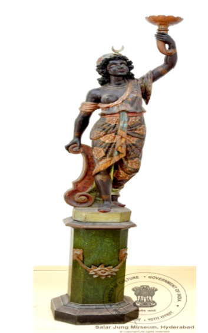

3. फ़्रांसीसी अफ़्रीकी महिला

अभिलेख संख्या: LXXII-12
एक पेडेस्टल (आधार) पर फ्रांस की अफ्रीकी महिला की आकृति स्थापित है, जो छोटी कमरबंध वाली पोशाक पहने हुए है। यह पोशाक सुनहरे और फूलों के रंगों से सजी हुई है। वह अपने बाएँ हाथ में एक दीपक (लाइट होल्डर) पकड़े हुए है, जबकि उसका दाहिना हाथ एक स्तंभ पर टिका हुआ है। उसने सुनहरे रंग की टोपी पहन रखी है, जिसके ऊपर अर्धचंद्र (क्रेसेंट मून) बना हुआ है। वह अपने बाएँ हाथ में पकड़े दीपक की ओर देख रही है। वह हरे रंग के पेडेस्टल पर खड़ी है, जिस पर सुंदर पुष्पों की नक्काशी की गई है। यह मूर्ति लकड़ी से बनी हुई है। यह लकड़ी की मूर्ति फ्रांस की है और इसका निर्माण 19वीं शताब्दी में हुआ था।
3. French African Woman
🔇 Is bhasha me audio uplabdh nahi hai.
Acc No: LXXII-12
Mounted on a pedestal is the figure of a French African woman wearing a short belted dress decorated in gold and floral colours. She holds a lamp (light holder) in her left hand while her right hand rests on a column. She wears a golden hat topped with a crescent moon, and she gazes towards the lamp in her left hand. She stands on a green pedestal carved with fine floral work. The figure is made of wood. This wooden sculpture is from France and was made in the 19th century.
3. ఫ్రెంచ్ ఆఫ్రికన్ మహిళ
🔇 Is bhasha me audio uplabdh nahi hai.
Acc No: LXXII-12
ఒక పీఠంపై ఫ్రాన్స్కు చెందిన ఆఫ్రికన్ మహిళ రూపం నిలబెట్టబడింది, ఆమె పొట్టి నడికట్టు దుస్తులు ధరించి ఉంది. ఈ దుస్తులు బంగారు రంగు మరియు పూల రంగులతో అలంకరించబడ్డాయి. ఆమె ఎడమ చేతిలో ఒక దీపం (లైట్ హోల్డర్) పట్టుకుని ఉంది, కుడి చేయి ఒక స్తంభంపై ఆనుకుని ఉంది. ఆమె బంగారు రంగు టోపీ ధరించింది, దానిపై అర్ధచంద్రుడు ఉన్నాడు. ఆమె తన ఎడమ చేతిలోని దీపం వైపు చూస్తోంది. ఆమె అందమైన పూల చెక్కడం గల ఆకుపచ్చ పీఠంపై నిలబడి ఉంది. ఈ శిల్పం కలపతో తయారు చేయబడింది. ఈ కలప శిల్పం ఫ్రాన్స్కు చెందినది మరియు 19వ శతాబ్దంలో తయారు చేయబడింది.
3. فرانسیسی افریقی خاتون
Acc No: LXXII-12
ایک چبوترے (پیڈسٹل) پر فرانس کی افریقی خاتون کی شبیہ نصب ہے، جو چھوٹی کمربند والی پوشاک پہنے ہوئے ہے۔ یہ پوشاک سنہری اور پھولوں کے رنگوں سے سجی ہوئی ہے۔ وہ اپنے بائیں ہاتھ میں ایک چراغ (لائٹ ہولڈر) پکڑے ہوئے ہے، جبکہ اس کا دایاں ہاتھ ایک ستون پر ٹکا ہوا ہے۔ اس نے سنہری رنگ کی ٹوپی پہن رکھی ہے، جس کے اوپر ہلال (کریسنٹ مون) بنا ہوا ہے۔ وہ اپنے بائیں ہاتھ میں پکڑے چراغ کی طرف دیکھ رہی ہے۔ وہ سبز رنگ کے چبوترے پر کھڑی ہے، جس پر خوبصورت پھولوں کی نقاشی کی گئی ہے۔ یہ مجسمہ لکڑی سے بنا ہوا ہے۔ یہ لکڑی کا مجسمہ فرانس کا ہے اور اس کی تیاری 19ویں صدی میں ہوئی تھی۔
৩. ফরাসি আফ্রিকান নারী
Acc No: LXXII-12
একটি বেদির উপর ফ্রান্সের আফ্রিকান নারীর মূর্তি স্থাপিত, যিনি ছোট কোমরবন্ধযুক্ত পোশাক পরে আছেন। পোশাকটি সোনালি ও ফুলের রঙে সাজানো। তিনি বাঁ হাতে একটি প্রদীপ (লাইট হোল্ডার) ধরে আছেন, আর ডান হাত একটি স্তম্ভের উপর রাখা। তিনি সোনালি রঙের টুপি পরেছেন, যার উপরে অর্ধচন্দ্র রয়েছে। তিনি বাঁ হাতে ধরা প্রদীপের দিকে তাকিয়ে আছেন। তিনি সবুজ রঙের বেদির উপর দাঁড়িয়ে আছেন, যেখানে সুন্দর ফুলের কারুকাজ করা হয়েছে। মূর্তিটি কাঠের তৈরি। কাঠের এই ভাস্কর্যটি ফ্রান্সের এবং এটি ঊনবিংশ শতাব্দীতে নির্মিত।
3. ફ્રેન્ચ આફ્રિકન મહિલા
Acc No: LXXII-12
એક પેડેસ્ટલ (આધાર) પર ફ્રાન્સની આફ્રિકન મહિલાની આકૃતિ સ્થાપિત છે, જે ટૂંકા કમરબંધવાળો પોશાક પહેરેલી છે. આ પોશાક સોનેરી અને ફૂલોના રંગોથી શણગારેલો છે. તે પોતાના ડાબા હાથમાં એક દીવો (લાઇટ હોલ્ડર) પકડી છે, જ્યારે તેનો જમણો હાથ એક સ્તંભ પર ટેકવેલો છે. તેણે સોનેરી રંગની ટોપી પહેરી છે, જેની ઉપર અર્ધચંદ્ર બનેલો છે. તે પોતાના ડાબા હાથમાં પકડેલા દીવા તરફ જોઈ રહી છે. તે લીલા રંગના પેડેસ્ટલ પર ઊભી છે, જેના પર સુંદર પુષ્પોની કોતરણી કરવામાં આવી છે. આ શિલ્પ લાકડામાંથી બનેલું છે. આ લાકડાનું શિલ્પ ફ્રાન્સનું છે અને તેનું નિર્માણ 19મી સદીમાં થયું હતું.
3. ಫ್ರೆಂಚ್ ಆಫ್ರಿಕನ್ ಮಹಿಳೆ
Acc No: LXXII-12
ಒಂದು ಪೀಠದ ಮೇಲೆ ಫ್ರಾನ್ಸ್ನ ಆಫ್ರಿಕನ್ ಮಹಿಳೆಯ ಆಕೃತಿಯನ್ನು ಸ್ಥಾಪಿಸಲಾಗಿದೆ, ಆಕೆ ಚಿಕ್ಕ ಸೊಂಟಪಟ್ಟಿಯ ಉಡುಪು ಧರಿಸಿದ್ದಾಳೆ. ಈ ಉಡುಪನ್ನು ಚಿನ್ನದ ಮತ್ತು ಹೂವಿನ ಬಣ್ಣಗಳಿಂದ ಅಲಂಕರಿಸಲಾಗಿದೆ. ಆಕೆ ತನ್ನ ಎಡಗೈಯಲ್ಲಿ ಒಂದು ದೀಪವನ್ನು (ಲೈಟ್ ಹೋಲ್ಡರ್) ಹಿಡಿದಿದ್ದಾಳೆ, ಬಲಗೈ ಒಂದು ಕಂಬದ ಮೇಲೆ ಆನಿಕೊಂಡಿದೆ. ಆಕೆ ಚಿನ್ನದ ಬಣ್ಣದ ಟೋಪಿ ಧರಿಸಿದ್ದು, ಅದರ ಮೇಲೆ ಅರ್ಧಚಂದ್ರ ಇದೆ. ಆಕೆ ತನ್ನ ಎಡಗೈಯಲ್ಲಿ ಹಿಡಿದ ದೀಪದ ಕಡೆಗೆ ನೋಡುತ್ತಿದ್ದಾಳೆ. ಆಕೆ ಸುಂದರ ಪುಷ್ಪ ಕೆತ್ತನೆಯುಳ್ಳ ಹಸಿರು ಬಣ್ಣದ ಪೀಠದ ಮೇಲೆ ನಿಂತಿದ್ದಾಳೆ. ಈ ಶಿಲ್ಪ ಮರದಿಂದ ಮಾಡಲಾಗಿದೆ. ಈ ಮರದ ಶಿಲ್ಪ ಫ್ರಾನ್ಸ್ನದ್ದಾಗಿದ್ದು, 19ನೇ ಶತಮಾನದಲ್ಲಿ ನಿರ್ಮಿಸಲಾಗಿದೆ.
୩. ଫ୍ରେଞ୍ଚ ଆଫ୍ରିକୀୟ ମହିଳା
Acc No: LXXII-12
ଏକ ପିଠିକା ଉପରେ ଫ୍ରାନ୍ସର ଆଫ୍ରିକୀୟ ମହିଳାଙ୍କ ମୂର୍ତ୍ତି ସ୍ଥାପିତ, ଯିଏ ଛୋଟ କଟିବନ୍ଧ ଥିବା ପୋଷାକ ପିନ୍ଧିଛନ୍ତି। ଏହି ପୋଷାକ ସୁବର୍ଣ୍ଣ ଏବଂ ଫୁଲର ରଙ୍ଗରେ ସଜାଯାଇଛି। ସେ ନିଜ ବାମ ହାତରେ ଏକ ଦୀପ (ଲାଇଟ ହୋଲ୍ଡର) ଧରିଛନ୍ତି, ଏବଂ ଡାହାଣ ହାତ ଏକ ସ୍ତମ୍ଭ ଉପରେ ଟେକି ରହିଛି। ସେ ସୁବର୍ଣ୍ଣ ରଙ୍ଗର ଟୋପି ପିନ୍ଧିଛନ୍ତି, ଯାହା ଉପରେ ଅର୍ଦ୍ଧଚନ୍ଦ୍ର ରହିଛି। ସେ ନିଜ ବାମ ହାତରେ ଧରିଥିବା ଦୀପ ଆଡ଼କୁ ଚାହିଁଛନ୍ତି। ସେ ସୁନ୍ଦର ପୁଷ୍ପ କାରୁକାର୍ଯ୍ୟ ଥିବା ସବୁଜ ରଙ୍ଗର ପିଠିକା ଉପରେ ଠିଆ ହୋଇଛନ୍ତି। ଏହି ମୂର୍ତ୍ତି କାଠରେ ନିର୍ମିତ। ଏହି କାଠ ମୂର୍ତ୍ତି ଫ୍ରାନ୍ସର ଏବଂ ଏହା ୧୯ଶ ଶତାବ୍ଦୀରେ ନିର୍ମିତ ହୋଇଥିଲା।
3. फ्रेंच आफ्रिकन महिला
🔇 Is bhasha me audio uplabdh nahi hai.
Acc No: LXXII-12
एका पीठावर (पेडेस्टल) फ्रान्सच्या आफ्रिकन महिलेची आकृती स्थापित आहे, जी लहान कमरबंद असलेला पोशाख परिधान केलेली आहे. हा पोशाख सोनेरी आणि फुलांच्या रंगांनी सजवलेला आहे. ती आपल्या डाव्या हातात एक दिवा (लाइट होल्डर) धरून आहे, तर तिचा उजवा हात एका स्तंभावर टेकलेला आहे. तिने सोनेरी रंगाची टोपी परिधान केली आहे, जिच्यावर अर्धचंद्र बनवलेला आहे. ती आपल्या डाव्या हातातील दिव्याकडे पाहत आहे. ती हिरव्या रंगाच्या पीठावर उभी आहे, ज्यावर सुंदर फुलांची नक्षी कोरलेली आहे. हे शिल्प लाकडापासून बनवलेले आहे. हे लाकडी शिल्प फ्रान्सचे असून त्याची निर्मिती 19व्या शतकात झाली होती.
3. ഫ്രഞ്ച് ആഫ്രിക്കൻ വനിത
Acc No: LXXII-12
ഒരു പീഠത്തിൽ ഫ്രാൻസിലെ ആഫ്രിക്കൻ വനിതയുടെ രൂപം സ്ഥാപിച്ചിരിക്കുന്നു; അവർ ചെറിയ അരപ്പട്ടയുള്ള വസ്ത്രം ധരിച്ചിരിക്കുന്നു. ഈ വസ്ത്രം സ്വർണ്ണ നിറത്തിലും പുഷ്പ വർണ്ണങ്ങളിലും അലങ്കരിച്ചിരിക്കുന്നു. അവർ ഇടതു കൈയിൽ ഒരു വിളക്ക് (ലൈറ്റ് ഹോൾഡർ) പിടിച്ചിരിക്കുന്നു, വലതു കൈ ഒരു തൂണിൽ ചാരിയിരിക്കുന്നു. സ്വർണ്ണ നിറത്തിലുള്ള തൊപ്പി ധരിച്ചിരിക്കുന്നു, അതിന് മുകളിൽ ചന്ദ്രക്കല ഉണ്ട്. അവർ ഇടതു കൈയിലെ വിളക്കിലേക്ക് നോക്കുന്നു. മനോഹരമായ പുഷ്പ കൊത്തുപണികളുള്ള പച്ച നിറത്തിലുള്ള പീഠത്തിൽ അവർ നിൽക്കുന്നു. ഈ ശില്പം മരം കൊണ്ട് നിർമ്മിച്ചതാണ്. ഈ മരശില്പം ഫ്രാൻസിലേതാണ്, പത്തൊൻപതാം നൂറ്റാണ്ടിൽ നിർമ്മിക്കപ്പെട്ടതുമാണ്.